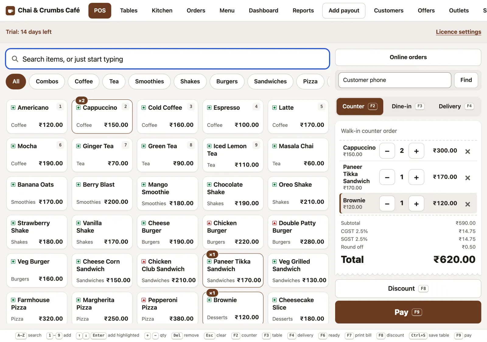
Billing
Tap or type an item
A counter order in a few seconds, by touch or keyboard.
- Start typing: “cap” and Enter adds Cappuccino. Arrow keys move the highlight.
- Or tap a tile. The badge shows how many are on the bill.
- Counter, Dine-in or Delivery, also with F2, F3 and F4.
- Change the quantity with + and −, or remove a line.
- Subtotal, CGST, SGST and round-off update as you add items.
- Pay with F9.
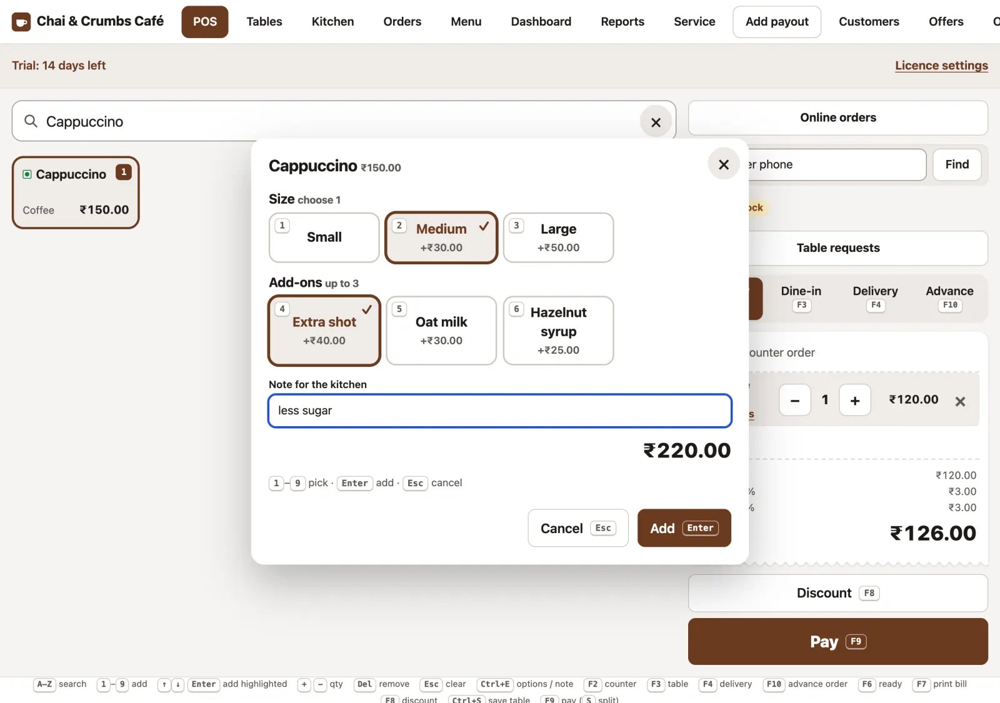
Billing
Pick a size and add-ons
Items with options open a quick picker with big buttons.
- Required choices come first, such as Small, Medium or Large.
- Add-ons like extra cheese add their price to the item.
- Number keys 1–9 pick options; Enter adds the item.
- Add a short note for the kitchen, like “less sugar”. It prints on the KOT and the bill.
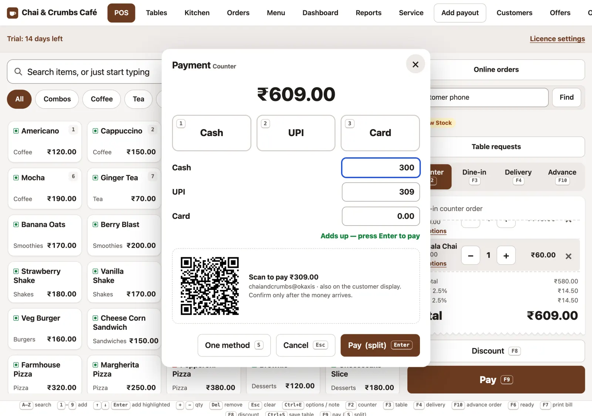
Billing
Pay, even split across methods
Part cash, part UPI on one bill.
- Pick Cash, UPI or Card, or add more than one.
- Enter each amount; TapTill shows what is left to pay.
- The cash drawer and reports count each part under its own method.
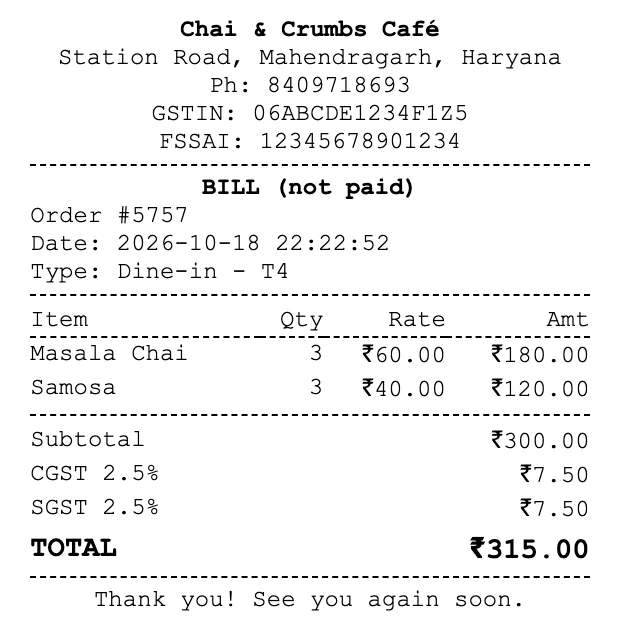
Billing
The printed bill
Straight to your 80 mm or 58 mm thermal printer, no print dialog.
- Your café name, address, phone, GSTIN and FSSAI on top.
- Items with quantity, rate and amount.
- CGST and SGST at your GST rate.
- The total, rounded to the rupee, and your thank-you line.
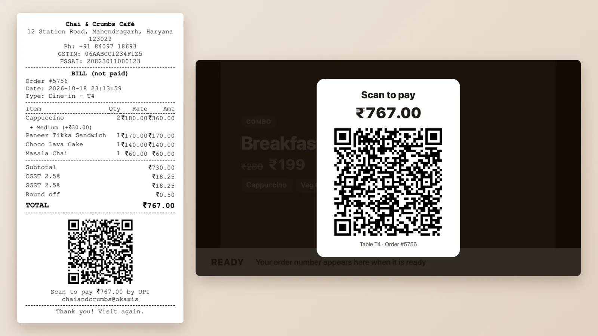
Billing
UPI QR with the amount
Guests scan and pay the exact bill amount.
- Add your UPI ID once in Settings.
- The bill shows a QR with the exact amount and the bill number.
- The customer display can show it too. The cashier confirms the payment.
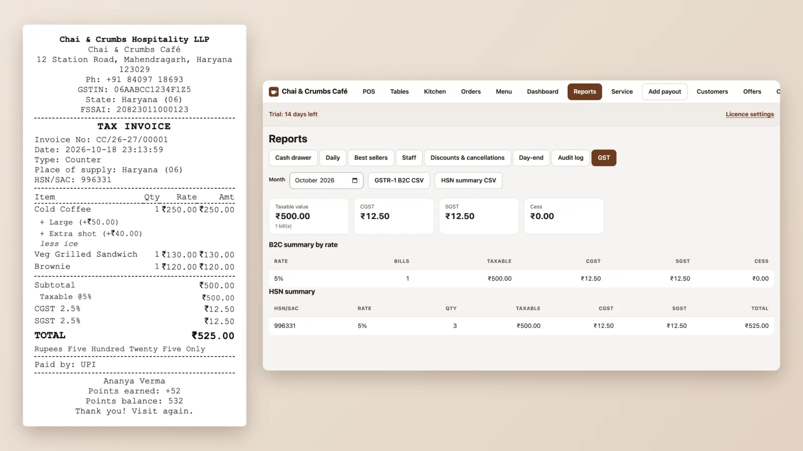
Billing
GST tax invoice and GSTR-1
A tax invoice your accountant can use as it is.
- “Tax Invoice” with your legal name, GSTIN and state (or “Bill of supply” if you are not registered).
- HSN/SAC, taxable value per GST rate and the amount in words.
- Bill numbers by financial year, like CAFE/25-26/00001.
- Reports → GST: monthly B2C and HSN summaries as CSV files.
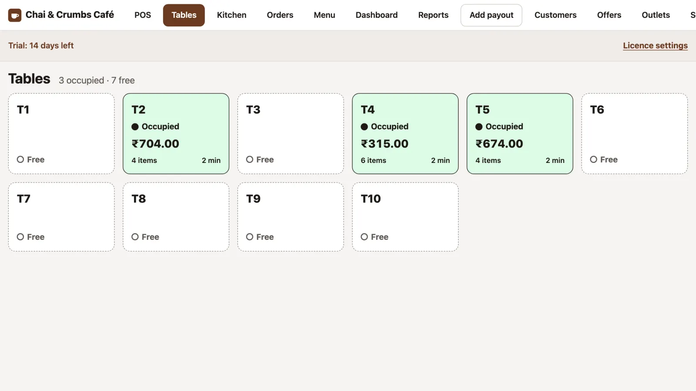
Tables
Tables at a glance
See every table, its bill and its food, from the counter.
- How many tables are occupied and free.
- A busy table shows its running bill, item count and time seated.
- Kitchen status: in kitchen, preparing or ready.
- Tap a free table to start a dine-in order.
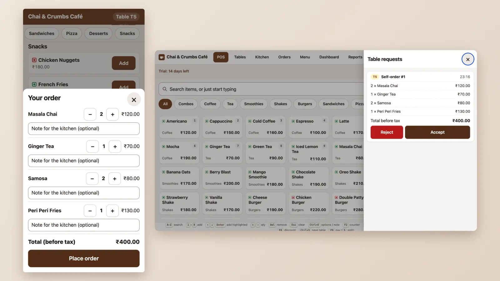
Tables
Table QR self-ordering
Guests order from their own phone on the café Wi-Fi.
- Print a QR sheet with one code per table.
- Guests scan, pick items and place the order. They only see their own table’s order.
- Orders wait in the Self-orders inbox until staff accept them.
- “Call waiter” and “Ask for bill” chime at the counter.
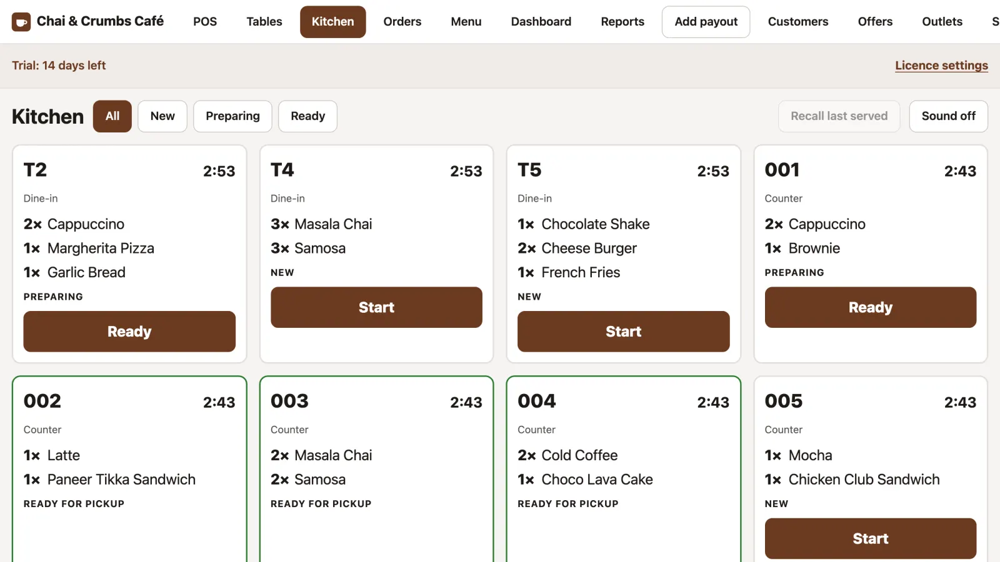
Kitchen
Kitchen screen
Orders appear the moment they are saved.
- Filter new, preparing and ready tickets.
- Each ticket shows the table or order number and how long it has waited.
- Tap Start when cooking begins…
- …and Ready when it is done.
- Ready tickets wait for pickup, and the number goes to the TV.
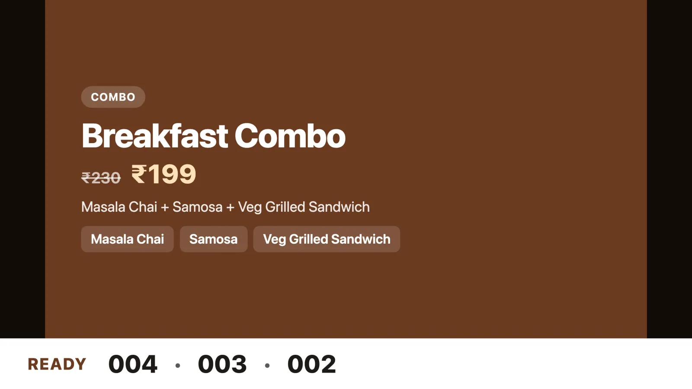
Kitchen
Customer display
Any TV near the counter becomes your offer board and pickup screen.
- Live offers play as a slideshow.
- Combo price next to the regular price.
- Ready order numbers along the bottom, so nobody has to shout names.
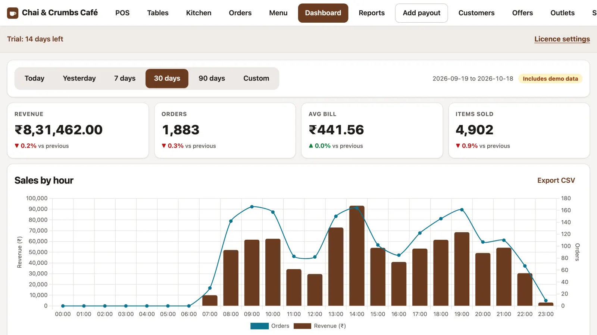
Reports
Dashboard
How the café is doing, compared with the period before.
- Today, yesterday, 7, 30 or 90 days, or your own dates.
- Revenue, orders, average bill and items sold, with the change from before.
- Sales by hour: when the money comes in.
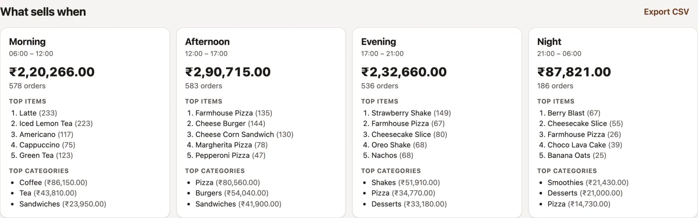
Reports
What sells when
Plan your menu, offers and staff around real sales.
- Revenue and orders for each part of the day.
- The top five items in each time slot.
- Set your own time slots in Settings.
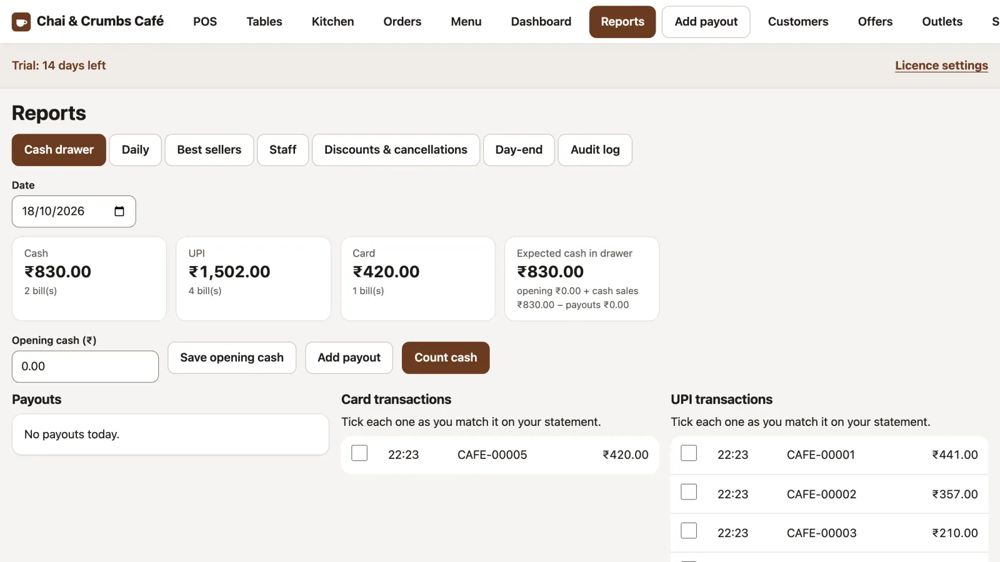
Cash
Cash drawer
Know what should be in the drawer before you count it.
- Cash, UPI and card totals for the day.
- Expected cash: opening cash plus cash sales, minus payouts.
- Count notes by denomination and see any difference.
- Tick each UPI and card payment as you match your statement.
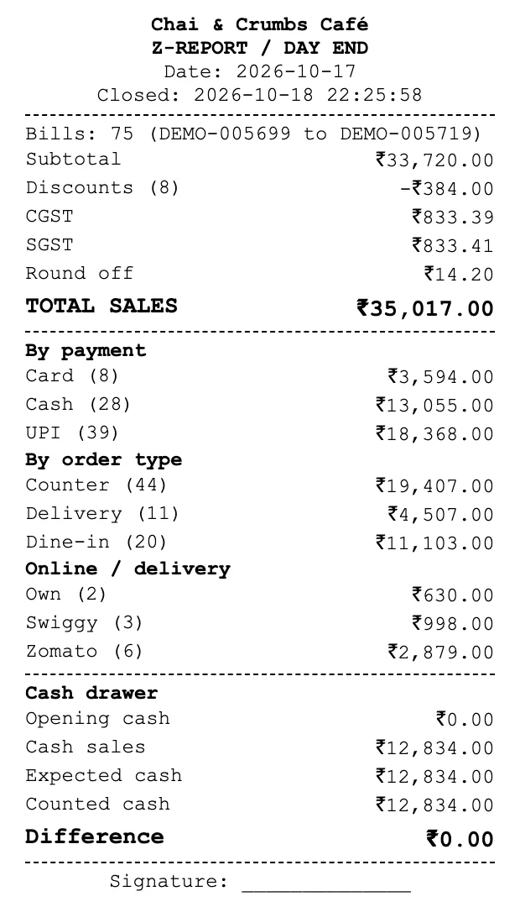
Cash
Z-report: close the day
One printout with the whole day.
- Total sales with discounts, CGST, SGST and round-off.
- By payment method, order type and delivery platform.
- Counted cash against expected cash.
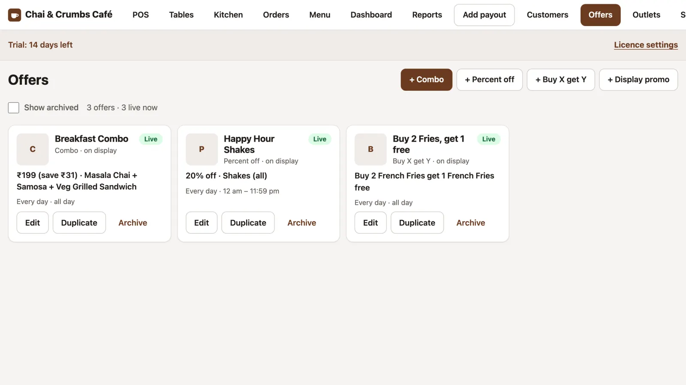
Offers
Offers and combos
Combos, happy hours and buy X get Y, applied by the till.
- Create a combo, percent off, buy X get Y or a display-only promo.
- Each offer shows what it gives and when it runs.
- Live now or scheduled, at a glance.
- Edit, duplicate or archive an offer.
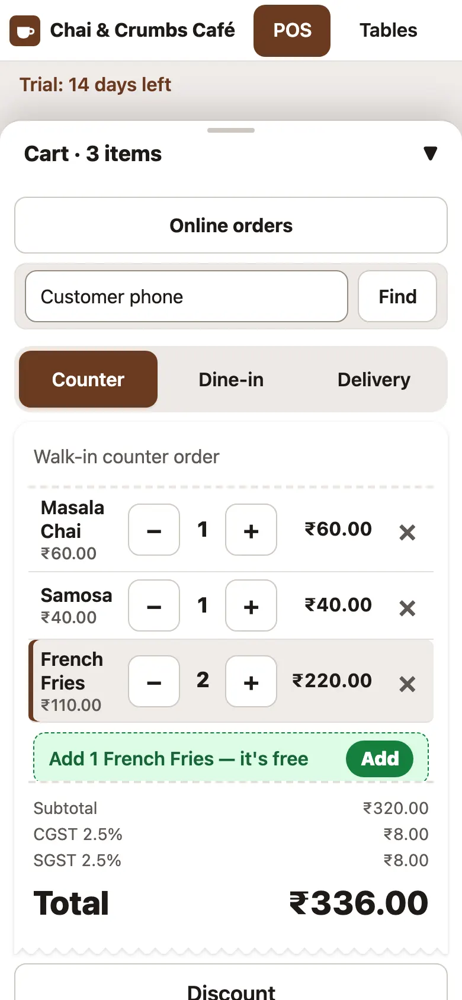
Offers
The till suggests the free item
Cashiers never miss an offer, even on a phone.
- Two French Fries on the bill qualify for “Buy 2, get 1 free”.
- TapTill suggests the free item; one tap adds it.
- The total updates with the offer applied.
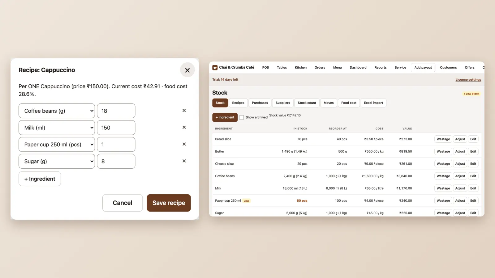
Stock & profit
Stock and recipes
Stock comes off by itself as you sell.
- Add ingredients in g, ml or pieces, with a reorder level.
- Give each item a recipe; stock comes off when a bill is paid.
- Record purchases and wastage, and count stock to match the shelf.
- See the food cost % of each item.
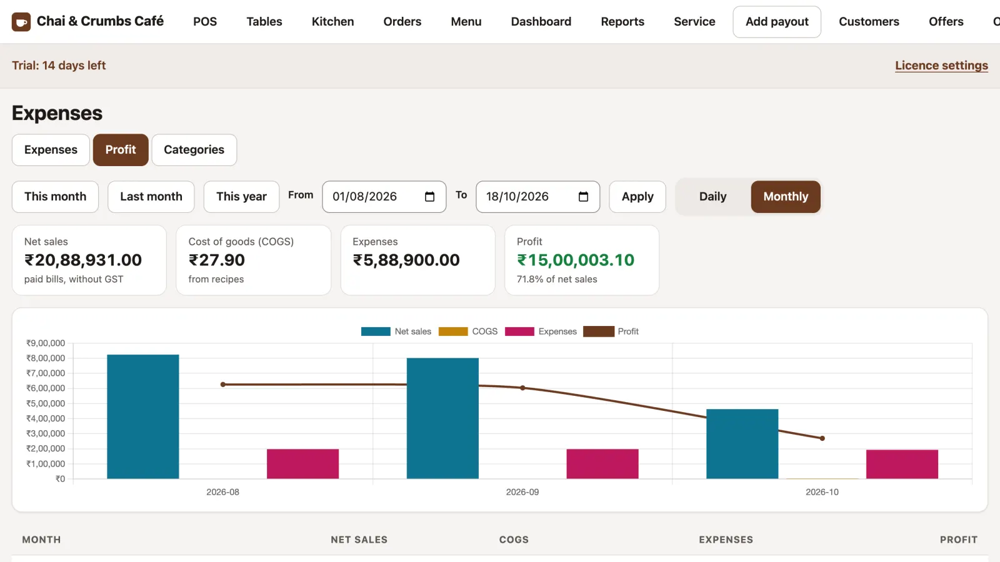
Stock & profit
Expenses and profit
What you actually made today and this month.
- Record expenses by category, or straight from a cash payout.
- Profit per day and month: sales minus food cost and expenses.
- A chart of profit over time.
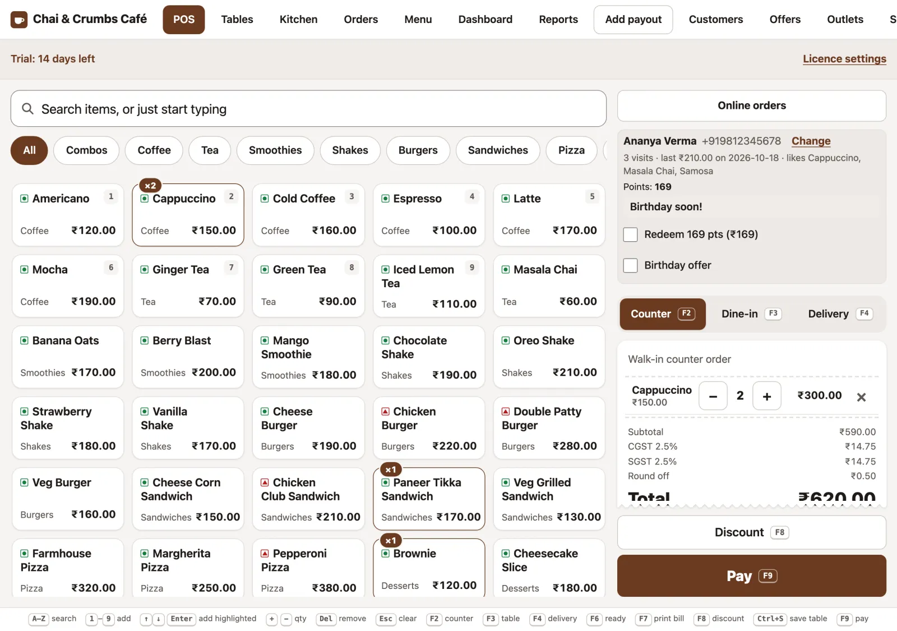
Loyalty
A regular at the till
Points, favourites and birthdays, from a phone number.
- Type the phone number and press Find: name, visits and favourites appear.
- A reminder when their birthday is near.
- Redeem points on this bill, or apply the birthday offer.
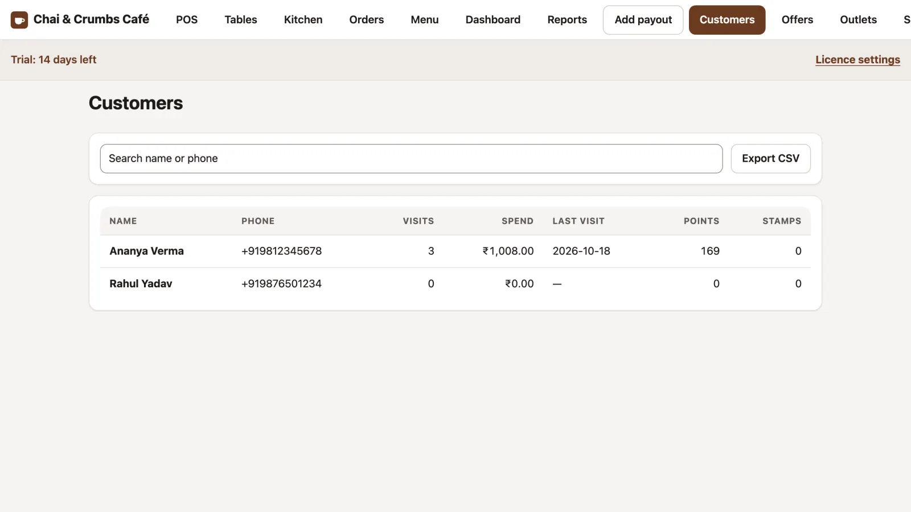
Loyalty
Customer list
Everyone who came back, in one list.
- Each customer with visits, spend and last visit.
- Points or stamps balance.
- Export the list as CSV for your own messages.
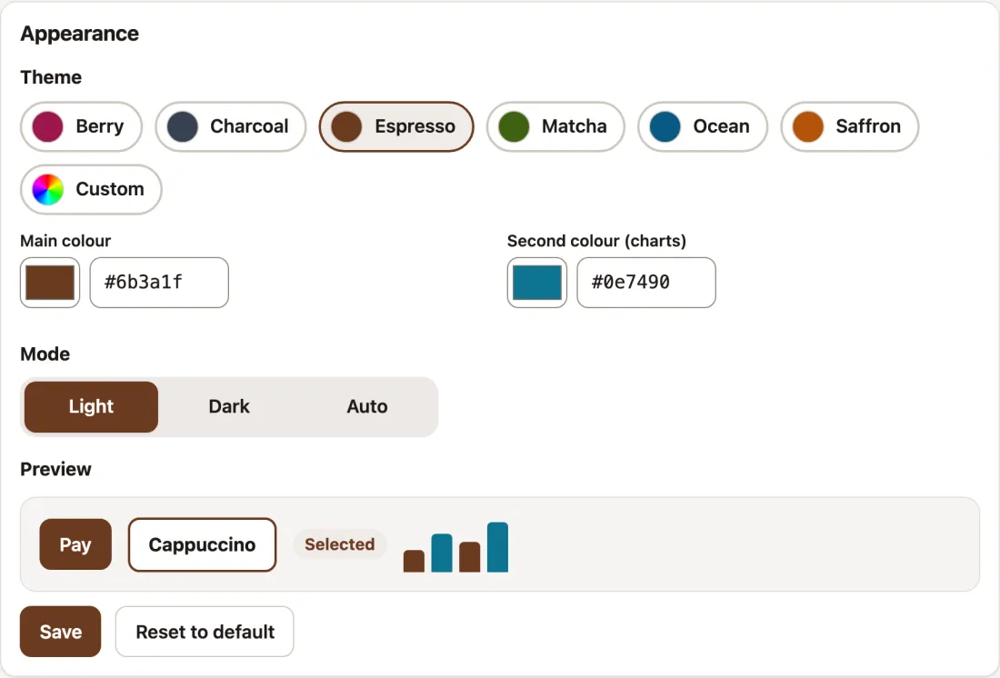
Settings
Appearance
Match the till to your café’s colours.
- Six colour presets, or your own brand colour.
- Light, dark or automatic.
- Preview before you save. Text stays readable whatever colour you pick.
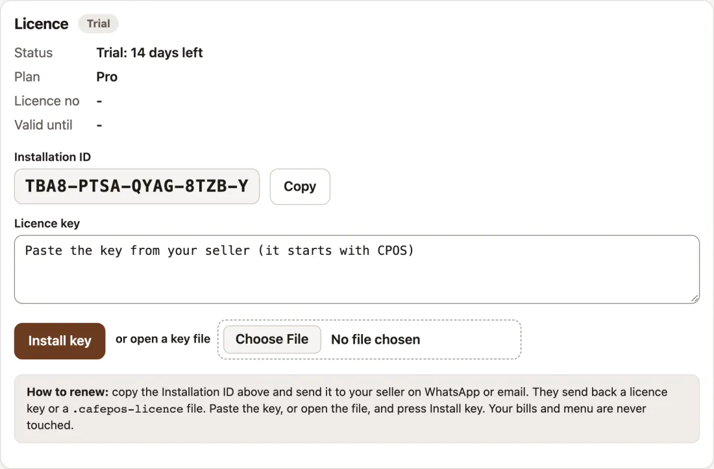
Settings
Licence
Your key works offline and is tied to this laptop.
- Trial or licence status, plan and end date.
- Your Installation ID. Copy it and send it to us on WhatsApp.
- Paste the key we send back, or open the key file.
- Install key. Done, no internet needed.
Use the ← and → keys, or swipe the picture. Tap a numbered dot on the picture to highlight its note.
Every screen in this tour runs on the café’s own computer and keeps working without internet.